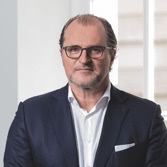

The RISE STO.
Join the Future of Investing.
The RISE 2019 Security Token Offering is a unique chance to profit from the tectonic, trillion-dollar shift of global asset management towards AI.
- Profit-Sharing Security Token
- Patent-Pending AI Trading Technology
- Patent-Pending AI Trading Tech.
- 3+ Years Track Record with Live Clients
- 3+ Years Live Track Record
* Minimum Investment: DE: €100k, US: $50k (accredited investors)
What is RISE?
RISE is a FinTech company developing patent-pending AI / ML trading systems outperforming global markets since 2016. We are are changing the way how funds, investors and asset managers invest. To fuel growth, scale internationally and to attack the $80 trillion asset management industry we are launching the RSE token with a $120 million STO target. Join to get your cut of Wall Street.
-
$11M+ Invested pre-STO
Investments from prestigious serial entrepreneurs & crypto investors.
-
3 LIVE PRODUCTS
We are live with RISE Wealth, RISE App and the RISE Scanner
-
100% German Engineering
Based in Munich, one of the leading AI technology hubs globally.
-
3 Years Track Record
RISE has earned profits for institutional money managers since 2016.
-
20+ All-Star Team Members
Team of all-star traders, developers, data scientists and entrepreneurs.
-
Patent-Pending Technology
Our self-learning AI technology has been filed for patent.
“RISE is on a multi-billion-$ mission to reinvent asset management with self-learning AI trading software. I can see $12+ billion institutional capital flowing into RISE strategies over the next 5 years”
Stefan Tittel Founder & CEO | RISE
Launching RSE: a Profit-Sharing Security Token
The RSE token pays out quarterly dividends from all profits that RISE generates. It allows regular investors to benefit from the massive potential and wealth generation of the unparalleled shift towards AI-powered investment management.
RSE holders get quarterly profit payouts
RISE’s main drivers of profits are strategy licensing revenues from institutions and revenues from its retail platform, the RISE App.
Get 4% p.a. extra payback (on top of profit payouts)
RSE token holders are entitled to a $0.04 annual payback per token for 25 years up to a full repayment of $1.00 / token.
RSE holders participate in a potential IPO or Sale
Should RISE be listed on an official exchange or be acquired, token holders will receive a share of the proceeds.
A $120 million target fundraise
Funds will be used to invest into technology and to expand the business aggressively across multiple geographies.
All-Star STO advisory board with leading investors
We’ve assembled a very experienced advisory board of serial entrepreneurs, investors & crypto experts.
Best-in-class STO execution and partners
We are working with Securitize, the world’s top STO issuance platform and prestigious partners such as Vo1t and Galaxy Digital.
Partners, Press & Conferences
Meet the RISE Flagship Strategy
Over the past 5 years, RISE’s technology produced a wide variety of trading strategies for its clients. With remarkable results. Since its launch in 2016, the flagship strategy "Volatility Opportunities" has managed to generate 4.5x higher returns than its peer group and other AI-based strategies in general.
Description
Volatility opportunities is a multi-strategy approach software in the S&P 500 index and its implied volatility market providing a short-term tail risk reduction for a plain S&P 500 only exposure (view more) Volatility opportunities is a multi-strategy approach software in the S&P 500 index and its implied volatility market providing a short-term tail risk reduction for a plain S&P 500 only exposure. Tail risk reduction means minimization of high losses due to market volatility. Via its intraday long-short volatility exposure, the systematic AI driven investment process of the software aims to use the S&P 500 volatility as an additional return contributor. The Volatility Opportunities Algorithm strategy software is in live trading with clients since May 2016.
Performance
Return gross of fees: 04/2016 - 06/2019
Disrupting an $80 Trillion (!) Industry
Technology is changing the face of asset management, one the biggest industries in the world; 80 trillion dollars in size *, about four times the size of the US GDP with more than 4,500 funds and asset managers each managing more than a billion dollars(!). Key fact: the next billion-$ or even trillion-$ asset manager will be a technology company.
Humans Cannot Compete
Human trading is being replaced at breath-taking speed by automated, data-driven algorithms. In global financial markets using computers with billions of times the human "computing capacity” to make trading decisions is the natural next step of the evolution of investing.
Massive Computing Power
In the next 5 years, the most successful asset managers will be technology companies. The RISE engine is fed with price data from over 10 years as well as hundreds of statistical indicators. Terabytes of new data are processed in real-time each day by 36 server cores.
RISE is the Future
A team of experienced serial entrepreneurs has built RISE over the last 7 years with the vision to be the "next big thing" in asset management. With over $11 million invested and an all-star team, RISE is ready to become a leading player in automated asset management.
Source: https://www.bcg.com/publications/2018/global-asset-management-2018-digital-metamorphosis.aspx
An All-Star Team. We are Traders, Engineers, Entrepreneurs and Investors.
-
Stefan Tittel CEO
Stefan is the founder and CEO of RISE. A highly accomplished serial entrepreneur with impeccable track record. The companies founded and led by him were sold for more than $200m. He previously founded: Sinus Cultur, Quantumrock Capital, Masterpayment AG, Traxpay AG, Crossgate AG. (view more)
-
Michael Morsch CFO
Executive with more than ten years experience as CFO in different technology-driven companies in the financial sector. Michael has worked as a certified executive director for an European licensed financial institution and the stock listed companies T-Systems, SAP AG and Net1 UEPS Technologies. Cofounder of Masterpayment AG and Sinus Cultur. (view more)
-
Robert Gold CTO
Highly experienced software architect specialized in complex trading systems and real time data processing systems with high-throughputs. Robert was in charge of the backend architecture of financial.com AG, leading a developer team of highly-skilled experts working on scalable architecture solutions for processing huge amounts of streaming data in real time. (view more)
-
Victor Bremer CIO
Former JP Morgan Chase and BP commodity market specialist with a long-term experience as a risk and trading analyst on the trading floor of BP. His deep understanding of commodity markets was an important catalyst for RISE's trading models. He has been conducting research for more than seven years into anomalies in commodities price trends. (view more)
-
Dr. Dr. Roman Gorbunov Head of AI Systems
Dr. Dr. Gorbunov has more than a decade of practical experience in applying machine learning to a very broad range of problems in both academia and industry. Two PhDs in Game Theory and Quantum Chemistry and a Master Degree in Theoretical Physics. His main interests lie in building intelligent systems based on state of the art techniques in Deep Reinforcement Learning. (view more)
-
Nikolay Nadirashvili Head of Algorithmic Trading
Nikolay has been developing algorithmic trading systems using machine learning in different Russian investment companies since 2008 as a quantitative analyst. Nikolay was responsible for designing statistical arbitrage, options and futures models for indices, stocks and currencies. He has a deep background in machine learning, mathematics, economics and computer science. (view more)
-
Michael Zeller Head of Institutional Fund Management
Michael Zeller has more than two decades of quantitative fund management experience across a number of different asset classes. He has researched, developed and implemented a number of different systematic trading systems over the years. He has worked for the following asset management firms and institutions: BayernInvest, CM Equity Munich, Corebot GmbH, Lupus Alpha, Credit Suisse. (view more)
-
Benedict Frauen Senior Program Manager & Authorized Director
Entrepreneurship and Finance Expert. Helped in building Masterpayment to 50M EUR. Benedict is passionate about innovation and growth in the Digital Asset Trading and Finance space. He has built and grown companies across Technology and Beverage sectors in Germany, The Netherlands, and the United States. (view more)
-
Nadine Korehnke Head of Family Office Relations
Nadine spent most of her career in the family office industry working for large financial institutions such as Merrill Lynch in New York and London and for Unicredit and Deutsche Bank in Munich. She then built up a real estate focused single family office in Munich and worked in the real estate sector covering family offices in the past few years. With 20 years of business experience, she holds a thorough knowledge of both the classic asset management industry as well as the real estate sector. Being Series 7 registered at New York Stock Exchange and being fluent in German, English and Italian are just some of the other qualifications she brings along. Nadine finished her Bachelor’s in business and languages in Munich, Germany and holds a Master’s in International Economics and Management (MIEM) with a focus on Money, Banking and Finance from SDA Bocconi, Italy. (view more)
-
David Beck Head of HNWI Relations
David has a proven track record of more than 10 years in various sales and business development leadership positions throughout the fintech and banking industries worldwide, including MASTERPAYMENT – NET1 Group (Nasdaq: UEPS), epay – Euronet Worldwide Group (Nasdaq: EEFT), and Wirecard AG (ETR: WDI.) (view more)
-
Maximilian von Wallenberg Chief Product Officer
Max is the head of Retail Products at RISE. Prior to RISE he was leading the product team at multi-asset mobile brokerage UpTick. Max is a serial FinTech Entrepreneuer and has worked as a oil & gas structure product trader for a US Investment bank. Max carries degrees from Harvard Business School and the London School of Economics. (view more)
-
Simon Frhr. von Poschinger-Bray Chief Platform Architect
Simon is a serial start-up founder, London Business School PhD, CASS EMBA, and the chief platform architect of RISE. He has led strategy & development of mobile brokerage UpTick and has co-founded several other successful companies. Prior to that, Simon led a Single Family Office focusing on PE and real estate investing and worked in his own family office focusing on innovation opportunities. (view more)
-
Timon Hartung Online Marketing Director
Performance marketing specialist since 2002, multichannel online marketing consultant and Crypto Enthusiast. Timon has a degree in Computer Science and has been doing online marketing since 2002 with a lot of experience in SEO and paid advertising channels especially in Facebook and RTB traffic. (view more)
-
Mehdi Sagid Head of Derivatives Trading
Mehdi Sagid is a derivatives trader with considerable experience in EURIBOR & Sterling STIR market making over the past 8 years. Before joining RISE, he was Head of the STIR options desk at Liquid Capital Markets (London). Mehdi graduated in Mathematical Engineering and Quantitative Finance from Ecole Nationale Supérieure de Techniques Avancées (Paris) and earned his master’s degree in Quantitative Finance from University Panthéon-Sorbonne, Paris. (view more)
-
Fabio Balloni Risk Manager
Fabio works in the Financial Industry since a decade and as Risk Manager at Rise, he works on the development of advanced Risk and Reporting algorithms in order to analyse and monitor the Investments. Prior to Rise, he gained his first experience developing a Risk Management Software for APL Italiana (now Simcorp Italiana SpA). After spending 2 years as a Portfolio Analytics Support Specialist with Factset Datasystems, he moved to the Asset Management as Quantitative Risk Manager by joining Quaestio Capital Management in Milan, Italy. Fabio graduated from the Technical University of Darmstadt with a Master Degree in Physics. (view more)
-
Felix Buchert Crypto / DLT Specialist
Distributed Ledger Technology University Lecturer with strong background in Computer Science and Mathematics. Smart contract expert. Data scientist and blockchain-enthusiast. Before joining Rise he has worked for an IT consultancy in Switzerland applying statistical data analysis and machine learning methods to a variety of areas. (view more)
-
Koung Tran Head of Software Develoment
Koung is a Software Developer with more than 20 years of experience in the financial industry. Before RISE, he worked at leading companies including Masterpayment, financial.com, HypoVereinsbank - UniCredit Bank AG and Honeywell. Koung is an Agile Software Architect and his strengths include software planning, development, realization, quality assurance and deployment procedures. (view more)
-
Prasad Subrahmanya Senior Java Developer
Prasad is a distributed systems enthusiast. His experience and interests include scalable, resilient architectures and infrastructure; at RISE, he works on the back-end systems. Previously, he worked as a Developer in various FinTech, E-commerce and B2B companies. Apart from the tech, he is a travel fanatic, hiker and loves mountains. (view more)
-
Nicole Bartl Accountant
Nicole is a seasoned accountant with more than fifteen years experience across different technology-driven companies in the financial sector. Further she is responsible for creating an ideal office atmosphere at Rise. Before joining Rise, she successfully managed the accounting of Masterpayment AG and Crossgate AG. (view more)
-
Didier Mamet International Business Development - MD France
An enthusiastic, dynamic, hands-on senior leader with a long history of achievement in go to market, market entry and international business development. Bringing over 25 years experience working with Global IT, Nasdaq and Fintech markets which spanned France, throughout EMEA and Quebec. (view more)
$1B+ in Exits. We’ve assembled a High-Calibre Investor & Advisor Team.
-
Urs Keller Investor
Former web.de executive, founder of billiger.de, PlanetSports, Misterlinse, Adscale and Adtraffic. Business Angel with global network. Urs Keller is founder of billiger.de, PlanetSports, Misterlinse, Adscale, Adtraffic, and Misterlinse. Urs Keller started his online career in 1999 after completing his studies in industrial engineering at the University of Karlsruhe with the founding of websolute AG, an Internet agency with more than 100 employees in Karlsruhe and Hong Kong. In 2000, he sells the company to WEB.DE AG and, as Senior Manager, takes over the management of the portal of Germany’s largest email provider with more than 20 million customers. In 2003, Urs Keller leaves WEB.de and since then has founded numerous start-ups. As a business angel, he also supports numerous founders and companies with extensive market know-how and an extensive network. His diverse investments include Stylight, Localists and Quandoo. (view more)
-
Volker Rofalski Investor
Founder of WebStock AG (exit to BAADER Bank) and TradeCross AG (exit to VEM Aktienbank), ex director of Equity Capital Markets at VEM. Active multi-supervisory board member. Volker Rofalski is the founder of WebStock AG, which he sold to BAADER Bank in 1999 and TradeCross AG, which he sold to VEM Aktienbank in 2005. Since then, Volker was director of Equity Capital Markets and authorized officer of the VEM Aktienbank. He studied business economics at the University of Augsburg. Volker is a member of the supervisory board of several listed and not listed companies. (view more)
-
Markus Rinderer Investor
Ex-CEO and founder of PAY.ON. Founding Partner of CURRENT Ventures, a global Fintech incubator, and co-founder of multiple Fintech startups. Markus is the Ex-CEO and founder of PAY.ON, a leading global payment gateway, that got acquired by ACI Worldwide in 2015. Markus is also Founding Partner of CURRENT Ventures, a global Fintech incubator, and co-founder of multiple Fintech startups. (view more)
-

Dr. Albert Wahl Advisor
Former BMW and IBM and Deutsche Bank executive, ex board member of MS Industrie AG. Founder and board member at UMT AG. After graduating as Dipl.-Wirt.-Ing. and PhD in Germany and the USA Dr. Albert Wahl began his career at BMW AG in Munich. After successful years as a manager at IBM and Deutsche Bank, he then worked from 1998 until the end of 2012 as a member of the executive board at MS Industrie AG (formerly GCI Industrie AG). Since 2010, he serves as company founder and board member of UMT AG. (view more)
-
Christoph Boeckle Investor
Ex-CEO of a German bank sold to NTT DoCoMo, member of the management board of Liechtenstein Life and also chairman of the board of Satabank PLC, Malta Christoph has several years of experience in the financial industry and was CEO of a leading German bank which he successfully sold to NTT DoCoMo. With net- mprivatbank 1891 AG he enabled several startups in Germany and Central Europe. With his venture fund affinity ventures ag he managed to exit several of his investments. He is member of the management board of Liechtenstein Life and also chairman of the board of Satabank PLC, Malta. (view more)
-
Carsten Erdt Investor
Founder of a large logistics corporation, founder of several international trading companies, active StartUp Investor. Carsten Erdt, born in Lampertheim, studied Economics at University of Mannheim. Founded a logistics service provider in 1990 (Erdt Group) with 500 employees 40 million annual turnover today. In 1995 he founded several trading companies with production in China and Korea. Active investor in startups (currently 20 participations) for 6 years. Member of various advisory boards, e.g. Founding committee of Heidelberg University of Applied Sciences and Innowerft Walldorf (Incubator of SAP and City of Walldorf). (view more)
-
Mark Cummins Advisor
Professor of Finance at the Dublin City University, PhD in Quantitative Finance, ex Quantitative Analyst within the Global Risk Function for BP Oil International, editor and lecturer. Mark Cummins is Professor of Finance at the Dublin City University Business School and Head of the Economics, Finance and Entrepreneurship Academic Group. He holds a PhD in Quantitative Finance. Mark has research interests in an array of areas: computational finance; energy and commodity finance; model risk management; behavioral finance; fintech; cybersecurity and data breaches. He has published in leading international finance journals. (view more)
-
Wendy Diamond Advisor
Internationally Renowned Social Entrepreneur, Humanitarian, Best Selling Author - Wendy Diamond is CEO/Founder of Women’s Entrepreneurship Day Organization /#ChooseWOMEN. She is an Investor/Advisor in social impact disruptive technologies and women led businesses in Health Sciences, Artificial Intelligence, Blockchain Technology, Fintech and Virtual Reality, including Producers Market, RISE Wealth Technologies, IPWE, Blocktower Investments, Infinigon Group, SAFE Health App, Redeem Global, Farma Trust, Altair Breathometer, Simply Vital and Snakt. She has been also been a featured keynote speaker at the United Nations, Harvard University and Davos. Wendy sits on the Advisory Boards of Ellis Island Honors Society, Global Women in Blockchain, Social Innovation Summit, Humane Society of New York and Grey Muzzle Foundation. (view more)
-
James F. Haft Advisor
Entrepreneur and Merchant Banker. He has been an advisor to over 100 venture-backed and blockchain-based entities and is the founder of PALcapital, StartupHubNYC and co-founder of CryptoOracle, CryptoMondays, ClimateCoin, NXTPLabs and Condo.com. (view more)
-
Andreas Perreiter Investor
Founding partner/CTO of amaysim Australia (IPO 2015), Founding partner/COO of simyo (trade sale in 2007), Co-Founder Letsbuyit.com, Business Angel and Enterpreneur Entrepreneur, Business Angel and international investor in early stage tech companies Advisor, investor and senior executive for over 20 years international telecommunications companies, and mobile/internet start-ups . Founding partner and CTO of amaysim Australia Inc. (IPO in 2015) Founding partner, shareholder and COO of simyo in Europe (trade sale in 2007 to E- Plus/KPN) Member of the Letsbuyit.com start-up team 1999 and international IT-manager. (view more)
Press & Latest Blog Posts About RISE
-
Totgesagte leben länger
Totgesagte leben länger. Das gilt auch für Kryptowährungen, deren Kurse derzeit ins Bodenlose zu fallen scheinen. Aber Technologien verschwinden nicht.
GLOBAL INVESTOR, 14 Dec 2018 -
Why trading technology should be accessible to all
As with many emerging technologies, the most sophisticated trading algorithms have been kept in the hands of the elite, not shared with the wider trading community or everyday investors.
IT Pro Portal, 21 Nov 2018 -
Top 5 ways AI is changing traditional finance
The financial services sector continues to evolve, as innovation, and the growth of Artificial Intelligence in particular, is driving companies to adapt with the times.
World Finance, 15 Nov 2018 -
Wie Big Data die Vermögensverwaltung revolutioniert
Was hat die Parkplatzkamera von Walmart mit der Anlageentscheidung eines Vermögensverwalters zu tun? Nichts, sagen die einen – alles, sagen die anderen.
Frankfurter Allgemeine Zeitung, 17 Oct 2018